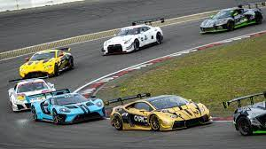

Gran Turismo: De Jugador A Corredor
Trailer:
Sinopsis:
Basada en la historia real de Jann Mardenborough,
la película narra cómo se cumple el deseo más grande
de
un adolescente jugador de Gran Turismo cuyas
habilidades hacen que gane una serie de competencias
de
Nissan para convertirse en un verdadero piloto de
carreras profesional.